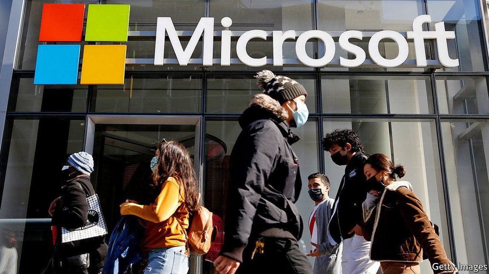
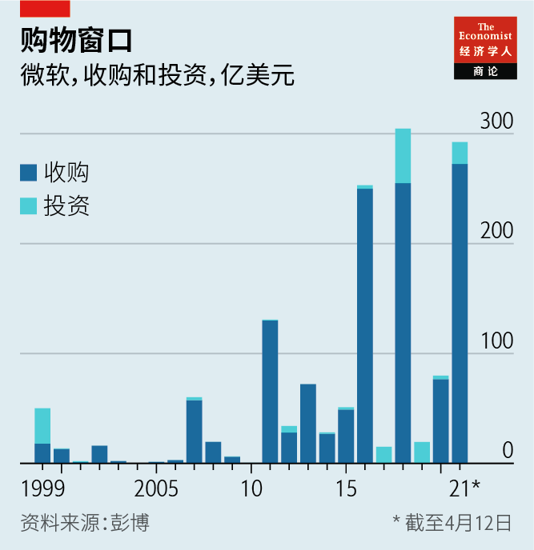
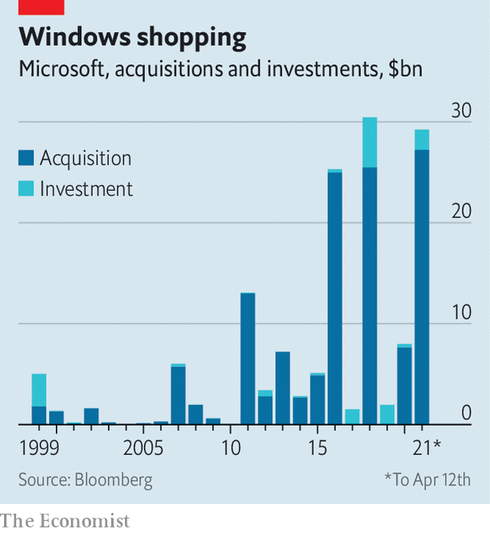

2021-05-02T13:25:55+00:00
看似任性，实则不然
微软疯狂并购背后的章法
读懂这家软件巨头大举收购的逻辑
收下我们的现金，或者至少收下我们的股票。这似乎已经成了微软这阵子的口头禅。在去年试图收购短视频应用TikTok的美国业务失败后，最近有传言称，该软件巨头正与虚拟看板Pinterest和在线聊天服务Discord进行收购谈判。而在4月12日，微软宣布将斥资近200亿美元现金，收购语音识别公司Nuance。这是该公司有史以来第二大收购案。
早在最近这一轮收购潮之前，微软就已经以热衷收购各种科技公司而闻名。目标公司与其销售办公软件的核心业务并不搭界，正如TikTok上的跳舞视频和Word及Excel格格不入一样。五年前，它斥资260亿美元收购了面向企业的社交网络领英（LinkedIn），这是它迄今最大的一笔收购。2018年，它以75亿美元收购了开源程序开发平台GitHub。“萨蒂亚·纳德拉是太无聊了吗？”科技媒体网站The Information质疑道。观察家们嘀咕，在成功扭转微软的颓势之后，这位掌门人似乎陷入了并购狂热而无法自拔。但实际上，这当中或许有章可循。
首先，经纪公司盛博的马克·莫德勒（Mark Moerdler）认为，以科技巨头的标准来看，微软的并购活动并不稀奇。这个行业充斥着收购传言，大多数很可能是真的。大公司之间经常就潜在的交易机会互相沟通。可以肯定地说，微软手头已经有针对许多潜在标的公司的投资意向书。与收购新业务相比，这家公司在扩大现有业务上的投入还是要大得多。除了Nuance那笔交易外，微软过去四年在大型收购上的支出仅为330亿美元，相比之下研发支出达到640亿美元。它的银行账户上拥有大量现金储备（去年年底达1320亿美元），同时公司市值不菲（自纳德拉2014年上任以来，股价已经上涨超过600%）。Alphabet和Facebook等竞争对手面临反垄断调查，近期都避开了大型交易，但微软已经不在反垄断机构的目标范围。
不过，以微软相对谨小慎微的标准来看，近年来它的收购欲望确实变得更强烈了（见图表）。它曾提供了一些教科书般的失败案例，最突出的是收购手机制造商诺基亚和互联网电话服务Skype，但此后微软已经学会了如何成功地整合目标公司。在纳德拉的领导下，这家公司已经转变形态，变得更加适合收购。
简单地说，它已成为一个巨大的计算云，能够消化任何数据，提供任何服务。因此，每一宗收购都可以在不止一个维度上为业务增加价值，并且——用投资银行杰富瑞（Jefferies）的布兰特·希尔（Brent Thill）的话说——不断“喂养巨兽”。即使TikTok这样的公司也会为云带来新的计算任务，提供海量视频来训练人工智能算法，从而增强微软的消费者业务。
收购也有助于微软搭乘行业大趋势，保持快速增长。与之前收购GitHub一样，收购Discord看来是在押注向创建内容和相关的用户社区的转变——纳德拉认为这将是网络生活的主流。Pinterest有点像领英，可以让微软获得关于人们的兴趣爱好的数据，继而可能催生新的电子商务形式。
收购Nuance集中体现了所有这些考量。这家公司以其语音识别软件和医疗平台闻名，77%的美国医院都使用该平台。这项技术，连同大量宝贵的健康数据，将大大充实微软的“健康云”。Nuance的专利组合还可以用于纳德拉的商业帝国的其他角落。尽管对于一家去年收入15亿美元、净利润2900万美元的公司来说，200亿美元的收购价格似乎有些昂贵，但微软负担得起。目前看来，Discord和Pinterest似乎已经不在考虑之列。但等着看微软达成更多出人意料的交易吧。也别被它们表面上的毫无章法给迷惑了。
2021-05-02T13:25:55+00:00
Don’t be fooled by randomness
The method in Microsoft’s merger madness
Making sense of the software giant’s acquisitive streak
TAKE OUR cash, or at least our shares. That appears to be Microsoft’s mantra these days. After failing to acquire the American operations of TikTok, a short-video app, last year, the software giant was recently rumoured to be in takeover talks with Pinterest, a virtual pin-board, and Discord, an online-chat service. And on April 12th the firm announced that it would acquire Nuance, a speech-recognition specialist, for nearly $20bn in cash—its second-biggest acquisition ever.
Even before this latest flurry Microsoft had acquired a reputation for coveting tech firms that looked as alien to its core business of selling office software as TikTok’s dance videos are to Word and Excel. Five years ago, in its biggest purchase, it paid $26bn for LinkedIn, a business-oriented social network. In 2018 it picked up GitHub, a development platform for open-source programs, for $7.5bn.“Is Satya Nadella getting bored?” wondered the Information, a website covering the tech industry. Having successfully turned Microsoft around, observers murmured, its boss might be in the grip of merger madness. In fact, there might be a method to it.
For starters, Microsoft’s merger activities are unexceptional by big-tech standards, says Mark Moerdler of Bernstein, a broker. The industry is rife with takeover rumours; most are probably true. Large firms talk regularly to each other about potential deals. It is safe to say that Microsoft has term sheets for many potential targets on file. It still invests far more in expanding its existing businesses than on buying new ones. Excluding the Nuance deal, the company has spent only $33bn on big acquisitions in the past four years, compared with $64bn on research and development. It has oodles of cash in the bank ($132bn at the end of last year) and a valuable currency (its share price is up by more than 600% since Mr Nadella took over in 2014). Unlike rivals such as Alphabet and Facebook, both of which face antitrust cases and have steered clear of big deals lately, Microsoft is no longer on trustbusters’ radar.
By its relatively timid standard, though, Microsoft has indeed become more acquisitive in recent years (see chart). Having provided textbook examples of what not to do, most notably after buying Nokia, a phonemaker, and Skype, an internet phone service, it has learned how to integrate targets successfully. Under Mr Nadella it has taken on a shape that better lends itself to this process.
Simply put, it has become a giant computing cloud that can digest any data and offer any service. An acquisition can thus add to the business in more ways than one—and “feed the beast”, in the words of Brent Thill of Jefferies, an investment bank. Even TikTok would have brought new computing tasks for the cloud, provided reams of videos to train artificial-intelligence algorithms and allowed the firm to beef up its consumer business.
Purchases also help Microsoft to keep growing rapidly by allowing it to ride big industry trends. Discord, like GitHub before it, looked to be a bet on the shift toward creating content and related user communities, which Mr Nadella thinks will dominate life online. A bit like LinkedIn, Pinterest would give Microsoft access to data about people’s interests, which could enable new forms of e-commerce.
The Nuance deal encapsulates all these considerations. The firm is best known for its speech-recognition software and a health-care platform used in 77% of American hospitals. This technology, along with lots of valuable health data, will beef up Microsoft’s “health cloud”. Nuance’s portfolio of patents can be used elsewhere in Mr Nadella’s empire. Though $20bn looks pricey for a firm with a net profit of $29m last year on revenues of $1.5bn, Microsoft can afford it. Discord and Pinterest seem to be off the table for now. But expect Microsoft to surprise with more deals. And don’t be fooled by their apparent randomness. ■
2021-05-02T13:25:55+00:00
看似任性，實則不然
微軟瘋狂併購背後的章法
讀懂這家軟件巨頭大舉收購的邏輯
收下我們的現金，或者至少收下我們的股票。這似乎已經成了微軟這陣子的口頭禪。在去年試圖收購短視頻應用TikTok的美國業務失敗後，最近有傳言稱，該軟件巨頭正與虛擬看板Pinterest和在線聊天服務Discord進行收購談判。而在4月12日，微軟宣布將斥資近200億美元現金，收購語音識別公司Nuance。這是該公司有史以來第二大收購案。
早在最近這一輪收購潮之前，微軟就已經以熱衷收購各種科技公司而聞名。目標公司與其銷售辦公軟件的核心業務並不搭界，正如TikTok上的跳舞視頻和Word及Excel格格不入一樣。五年前，它斥資260億美元收購了面向企業的社交網絡領英（LinkedIn），這是它迄今最大的一筆收購。2018年，它以75億美元收購了開源程序開發平台GitHub。“薩蒂亞·納德拉是太無聊了嗎？”科技媒體網站The Information質疑道。觀察家們嘀咕，在成功扭轉微軟的頹勢之後，這位掌門人似乎陷入了併購狂熱而無法自拔。但實際上，這當中或許有章可循。
首先，經紀公司盛博的馬克·莫德勒（Mark Moerdler）認為，以科技巨頭的標準來看，微軟的併購活動並不稀奇。這個行業充斥着收購傳言，大多數很可能是真的。大公司之間經常就潛在的交易機會互相溝通。可以肯定地說，微軟手頭已經有針對許多潛在標的公司的投資意向書。與收購新業務相比，這家公司在擴大現有業務上的投入還是要大得多。除了Nuance那筆交易外，微軟過去四年在大型收購上的支出僅為330億美元，相比之下研發支出達到640億美元。它的銀行賬戶上擁有大量現金儲備（去年年底達1320億美元），同時公司市值不菲（自納德拉2014年上任以來，股價已經上漲超過600%）。Alphabet和Facebook等競爭對手面臨反壟斷調查，近期都避開了大型交易，但微軟已經不在反壟斷機構的目標範圍。
不過，以微軟相對謹小慎微的標準來看，近年來它的收購慾望確實變得更強烈了（見圖表）。它曾提供了一些教科書般的失敗案例，最突出的是收購手機製造商諾基亞和互聯網電話服務Skype，但此後微軟已經學會了如何成功地整合目標公司。在納德拉的領導下，這家公司已經轉變形態，變得更加適合收購。
簡單地說，它已成為一個巨大的計算雲，能夠消化任何數據，提供任何服務。因此，每一宗收購都可以在不止一個維度上為業務增加價值，並且——用投資銀行傑富瑞（Jefferies）的布蘭特·希爾（Brent Thill）的話說——不斷“餵養巨獸”。即使TikTok這樣的公司也會為雲帶來新的計算任務，提供海量視頻來訓練人工智能算法，從而增強微軟的消費者業務。
收購也有助於微軟搭乘行業大趨勢，保持快速增長。與之前收購GitHub一樣，收購Discord看來是在押注向創建內容和相關的用戶社區的轉變——納德拉認為這將是網絡生活的主流。Pinterest有點像領英，可以讓微軟獲得關於人們的興趣愛好的數據，繼而可能催生新的電子商務形式。
收購Nuance集中體現了所有這些考量。這家公司以其語音識別軟件和醫療平台聞名，77%的美國醫院都使用該平台。這項技術，連同大量寶貴的健康數據，將大大充實微軟的“健康雲”。Nuance的專利組合還可以用於納德拉的商業帝國的其他角落。儘管對於一家去年收入15億美元、凈利潤2900萬美元的公司來說，200億美元的收購價格似乎有些昂貴，但微軟負擔得起。目前看來，Discord和Pinterest似乎已經不在考慮之列。但等着看微軟達成更多出人意料的交易吧。也別被它們表面上的毫無章法給迷惑了。